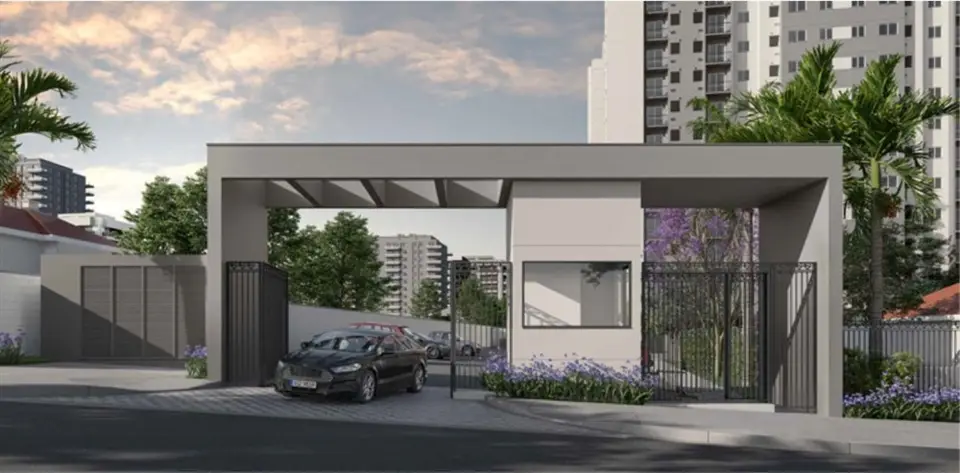

Um mundo de possibilidades, para você viver de um jeito especial a Zona Norte. Bem-vindo ao Vivaz Rua Honório.
Com vantagens que só a Vivaz proporciona: App Condomínio, trazendo facilidade para a sua rotina; Mini Marketing, comodidade na hora de fazer a suas compras; Carro Compartilhado, um carro exclusivo do condomínio para você usar quando quiser; Meu Jeito Vivaz, um serviço para você receber a sua casa com o acabamento que escolher.
Sua nova casa, especialmente para você.
Metragens, tipologias e disponibilidade conforme material oficial da incorporadora, sujeitos a alteração sem aviso. Valores e condições confirmados na tabela vigente. Seleção e atendimento: Paulo Cotrim, CRECI-RJ 77677-F.